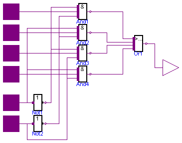
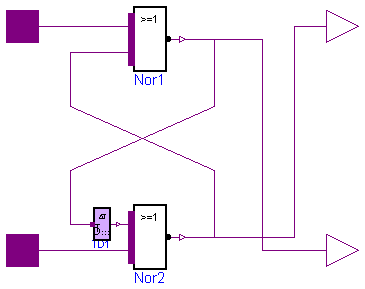
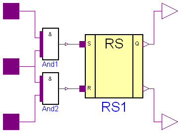
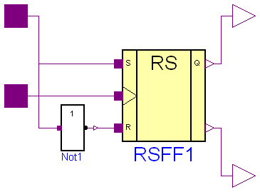
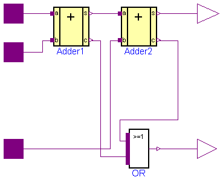
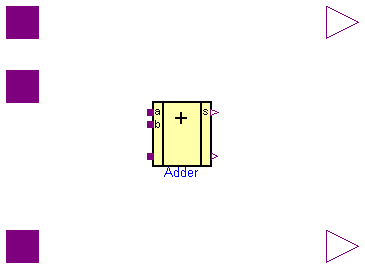
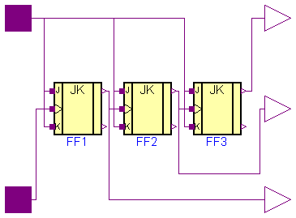

This package contains utility components used by package Examples.
| Name | Description |
|---|---|
| 4 to 1 Bit Multiplexer | |
| Unclocked RS FlipFlop | |
| RSFF | Unclocked RS FlipFlop |
| D FlipFlop | |
| JK FlipFlop | |
| adding circuit for binary numbers with input carry bit | |
| Adder | Generic N Bit Adder |
| 3 Bit Counter | |
| Generic N Bit Counter |

| Type | Name | Default | Description |
|---|---|---|---|
| Time | delayTime | 0.001 | [s] |
| Logic | q0 | L.'0' |
| Type | Name | Description |
|---|---|---|
| input DigitalInput | d0 | |
| input DigitalInput | d1 | |
| input DigitalInput | d2 | |
| input DigitalInput | d3 | |
| input DigitalInput | a0 | |
| input DigitalInput | a1 | |
| output DigitalOutput | d |
model MUX4 "4 to 1 Bit Multiplexer"
import D = Modelica.Electrical.Digital;
import L = Modelica.Electrical.Digital.Interfaces.LogicValue;
parameter Modelica.SIunits.Time delayTime=0.001;
parameter D.Interfaces.Logic q0=L.'0';
D.Interfaces.DigitalInput d0;
D.Interfaces.DigitalInput d1;
D.Interfaces.DigitalInput d2;
D.Interfaces.DigitalInput d3;
D.Interfaces.DigitalInput a0;
D.Interfaces.DigitalInput a1;
D.Interfaces.DigitalOutput d;
D.Basic.Or Or1(n=4);
D.Basic.And And1(n=3);
D.Basic.And And2(n=3);
D.Basic.And And3(n=3);
D.Basic.And And4(n=3);
D.Basic.Not Not1;
D.Basic.Not Not2;
equation
connect(a0, Not1.x);
connect(a1, Not2.x);
connect(d0, And1.x[2]);
connect(d1, And2.x[2]);
connect(d2, And3.x[2]);
connect(d3, And4.x[2]);
connect(And4.y, Or1.x[1]);
connect(And3.y, Or1.x[2]);
connect(And2.y, Or1.x[3]);
connect(And1.y, Or1.x[4]);
connect(Or1.y, d);
connect(Not1.y, And1.x[3]);
connect(Not1.y, And3.x[3]);
connect(Not2.y, And1.x[1]);
connect(Not2.y, And2.x[1]);
connect(a0, And4.x[3]);
connect(a0, And2.x[3]);
connect(a1, And4.x[1]);
connect(a1, And3.x[1]);
end MUX4;

| Type | Name | Default | Description |
|---|---|---|---|
| Time | delayTime | 0 | delay time [s] |
| Logic | q0 | L.'U' | initial value of output |
| Type | Name | Description |
|---|---|---|
| input DigitalInput | s | |
| input DigitalInput | r | |
| output DigitalOutput | q | |
| output DigitalOutput | qn |
model RS "Unclocked RS FlipFlop"
import D = Modelica.Electrical.Digital;
import L = Modelica.Electrical.Digital.Interfaces.LogicValue;
parameter Modelica.SIunits.Time delayTime=0 "delay time";
parameter D.Interfaces.Logic q0=L.'U' "initial value of output";
D.Basic.Nor Nor1;
D.Basic.Nor Nor2;
D.Interfaces.DigitalInput s;
D.Interfaces.DigitalInput r;
D.Interfaces.DigitalOutput q;
D.Interfaces.DigitalOutput qn;
D.Delay.TransportDelay TD1(delayTime=delayTime,y0=q0);
equation
connect(s, Nor1.x[2]);
connect(r, Nor2.x[1]);
connect(Nor2.y, Nor1.x[1]);
connect(Nor1.y,qn);
connect(Nor2.y,q);
connect(TD1.y, Nor2.x[2]);
connect(TD1.x, Nor1.y);
end RS;
 Modelica.Electrical.Digital.Examples.Utilities.RSFF
Modelica.Electrical.Digital.Examples.Utilities.RSFF
| Type | Name | Default | Description |
|---|---|---|---|
| Time | delayTime | 0.01 | [s] |
| Logic | q0 | L.'U' |
| Type | Name | Description |
|---|---|---|
| input DigitalInput | s | |
| input DigitalInput | r | |
| output DigitalOutput | q | |
| output DigitalOutput | qn | not Q |
| input DigitalInput | clk |
model RSFF "Unclocked RS FlipFlop"
import D = Modelica.Electrical.Digital;
import L = Modelica.Electrical.Digital.Interfaces.LogicValue;
parameter Modelica.SIunits.Time delayTime=0.01;
parameter D.Interfaces.Logic q0=L.'U';
D.Interfaces.DigitalInput s;
D.Interfaces.DigitalInput r;
D.Interfaces.DigitalOutput q;
D.Interfaces.DigitalOutput qn "not Q";
D.Interfaces.DigitalInput clk;
D.Examples.Utilities.RS RS1(delayTime=delayTime,q0=q0);
D.Basic.And And1;
D.Basic.And And2;
equation
connect(And2.y, RS1.r);
connect(And1.y, RS1.s);
connect(s, And1.x[2]);
connect(clk, And1.x[1]);
connect(clk, And2.x[2]);
connect(r, And2.x[1]);
connect(RS1.q,q);
connect(RS1.qn,qn);
end RSFF;
 Modelica.Electrical.Digital.Examples.Utilities.DFF
Modelica.Electrical.Digital.Examples.Utilities.DFF
| Type | Name | Default | Description |
|---|---|---|---|
| Time | Tdel | 0.01 | [s] |
| Logic | QInit | L.'U' |
| Type | Name | Description |
|---|---|---|
| input DigitalInput | d | |
| output DigitalOutput | q | |
| output DigitalOutput | qn | not Q |
| input DigitalInput | clk |
model DFF "D FlipFlop"
import D = Modelica.Electrical.Digital;
import L = Modelica.Electrical.Digital.Interfaces.LogicValue;
parameter Modelica.SIunits.Time Tdel=0.01;
parameter Digital.Interfaces.Logic QInit=L.'U';
Digital.Interfaces.DigitalInput d;
Digital.Interfaces.DigitalOutput q;
Digital.Interfaces.DigitalOutput qn "not Q";
Digital.Interfaces.DigitalInput clk;
D.Examples.Utilities.RSFF RSFF1;
Digital.Basic.Not Not1;
equation
connect(RSFF1.q,q);
connect(RSFF1.qn,qn);
connect(Not1.y, RSFF1.r);
connect(clk, RSFF1.clk);
connect(d, Not1.x);
connect(d, RSFF1.s);
end DFF;
 Modelica.Electrical.Digital.Examples.Utilities.JKFF
Modelica.Electrical.Digital.Examples.Utilities.JKFF

| Type | Name | Default | Description |
|---|---|---|---|
| Time | delayTime | 0.001 | [s] |
| Logic | q0 | L.'0' |
| Type | Name | Description |
|---|---|---|
| input DigitalInput | j | |
| output DigitalOutput | q | |
| output DigitalOutput | qn | not Q |
| input DigitalInput | clk | |
| input DigitalInput | k |
model JKFF "JK FlipFlop"
import D = Modelica.Electrical.Digital;
import L = Modelica.Electrical.Digital.Interfaces.LogicValue;
parameter Modelica.SIunits.Time delayTime=0.001;
parameter D.Interfaces.Logic q0=L.'0';
D.Interfaces.DigitalInput j;
D.Interfaces.DigitalOutput q;
D.Interfaces.DigitalOutput qn "not Q";
D.Interfaces.DigitalInput clk;
D.Interfaces.DigitalInput k;
D.Examples.Utilities.RS RS1(delayTime=delayTime,q0=q0);
D.Examples.Utilities.RS RS2(delayTime=delayTime,q0=q0);
D.Basic.And And1(n=3);
D.Basic.And And2(n=3);
D.Basic.And And3;
D.Basic.And And4;
D.Basic.Not Not1;
equation
connect(And2.y, RS2.r);
connect(And1.y, RS2.s);
connect(clk, And2.x[3]);
connect(clk, And1.x[1]);
connect(k, And2.x[2]);
connect(And4.y, RS1.r);
connect(And3.y, RS1.s);
connect(RS2.qn, And4.x[2]);
connect(RS2.q, And3.x[2]);
connect(clk, Not1.x);
connect(Not1.y, And3.x[1]);
connect(Not1.y, And4.x[1]);
connect(j, And1.x[2]);
connect(RS1.q, And2.x[1]);
connect(RS1.qn, And1.x[3]);
connect(RS1.qn, q);
connect(RS1.q, qn);
end JKFF;
 Modelica.Electrical.Digital.Examples.Utilities.HalfAdder
Modelica.Electrical.Digital.Examples.Utilities.HalfAdder
| Type | Name | Default | Description |
|---|---|---|---|
| Real | delayTime | 0 |
| Type | Name | Description |
|---|---|---|
| input DigitalInput | b | |
| output DigitalOutput | s | |
| input DigitalInput | a | |
| output DigitalOutput | c |
model HalfAdder parameter Real delayTime=0; Digital.Interfaces.DigitalInput b; Digital.Interfaces.DigitalOutput s; Digital.Interfaces.DigitalInput a; Digital.Interfaces.DigitalOutput c; Gates.AndGate AND(tLH=delayTime, tHL=delayTime); Gates.XorGate XOR(tLH=delayTime, tHL=delayTime); equation connect(AND.y, c); connect(XOR.y, s); connect(b, AND.x[1]); connect(b, XOR.x[1]); connect(a, XOR.x[2]); connect(a, AND.x[2]); end HalfAdder;

a b c in c out s
1 1 1 0
0 0 0 0
1 0 0 1
0 1 0 1
| Type | Name | Description |
|---|---|---|
| input DigitalInput | a | |
| input DigitalInput | b | |
| input DigitalInput | c_in | |
| output DigitalOutput | s | |
| output DigitalOutput | c_out |
model FullAdder
"adding circuit for binary numbers with input carry bit"
HalfAdder Adder2(delayTime=0.001);
HalfAdder Adder1(delayTime=0.001);
Digital.Interfaces.DigitalInput a;
Digital.Interfaces.DigitalInput b;
Digital.Interfaces.DigitalInput c_in;
Digital.Interfaces.DigitalOutput s;
Digital.Interfaces.DigitalOutput c_out;
Basic.Or OR;
equation
connect(c_out, OR.y);
connect(Adder2.c, OR.x[2]);
connect(Adder2.s, s);
connect(Adder1.a, a);
connect(b, Adder1.b);
connect(Adder1.s, Adder2.a);
connect(Adder1.c, OR.x[1]);
connect(c_in, Adder2.b);
end FullAdder;
 Modelica.Electrical.Digital.Examples.Utilities.Adder
Modelica.Electrical.Digital.Examples.Utilities.Adder
| Type | Name | Default | Description |
|---|---|---|---|
| Integer | n | 2 |
| Type | Name | Description |
|---|---|---|
| input DigitalInput | a[n] | |
| input DigitalInput | b[n] | |
| input DigitalInput | c_in | |
| output DigitalOutput | s[n] | |
| output DigitalOutput | c_out |
model Adder "Generic N Bit Adder"
import Modelica.Electrical.Digital;
parameter Integer n=2;
Digital.Examples.Utilities.FullAdder Adder[n];
Digital.Interfaces.DigitalInput a[n];
Digital.Interfaces.DigitalInput b[n];
Digital.Interfaces.DigitalInput c_in;
Digital.Interfaces.DigitalOutput s[n];
Digital.Interfaces.DigitalOutput c_out;
equation
connect(c_in,Adder[1].c_in);
for i in 1:n loop
connect(a[i],Adder[i].a);
connect(b[i],Adder[i].b);
connect(Adder[i].a,s[i]);
if i>1 then
connect(Adder[i-1].c_out,Adder[i].c_in);
end if;
end for;
connect(Adder[n].c_out,c_out);
end Adder;
 Modelica.Electrical.Digital.Examples.Utilities.Counter3
Modelica.Electrical.Digital.Examples.Utilities.Counter3
| Type | Name | Description |
|---|---|---|
| input DigitalInput | enable | |
| output DigitalOutput | q2 | |
| input DigitalInput | count | |
| output DigitalOutput | q1 | |
| output DigitalOutput | q0 |
model Counter3 "3 Bit Counter"
import D = Modelica.Electrical.Digital;
import L = Modelica.Electrical.Digital.Interfaces.LogicValue;
D.Interfaces.DigitalInput enable;
D.Interfaces.DigitalOutput q2;
D.Interfaces.DigitalInput count;
D.Examples.Utilities.JKFF FF1;
D.Examples.Utilities.JKFF FF2;
D.Examples.Utilities.JKFF FF3;
D.Interfaces.DigitalOutput q1;
D.Interfaces.DigitalOutput q0;
equation
connect(enable, FF1.j);
connect(enable, FF1.k);
connect(count, FF1.clk);
connect(FF1.q, FF2.clk);
connect(FF2.q, FF3.clk);
connect(FF2.j, enable);
connect(FF2.k, FF2.j);
connect(FF3.k, FF3.j);
connect(FF3.j, enable);
connect(FF3.q, q2);
connect(FF1.q, q0);
connect(FF2.q, q1);
end Counter3;
 Modelica.Electrical.Digital.Examples.Utilities.Counter
Modelica.Electrical.Digital.Examples.Utilities.Counter
| Type | Name | Default | Description |
|---|---|---|---|
| Integer | n | 3 | |
| Time | delayTime | 0.001 | [s] |
| Logic | q0 | L.'0' |
| Type | Name | Description |
|---|---|---|
| input DigitalInput | enable | |
| input DigitalInput | count | |
| output DigitalOutput | q[n] |
model Counter "Generic N Bit Counter"
import D = Modelica.Electrical.Digital;
import L = Modelica.Electrical.Digital.Interfaces.LogicValue;
parameter Integer n=3;
parameter Modelica.SIunits.Time delayTime=0.001;
parameter D.Interfaces.Logic q0=L.'0';
D.Interfaces.DigitalInput enable;
D.Interfaces.DigitalInput count;
D.Examples.Utilities.JKFF FF[n](each delayTime=delayTime,each q0=q0);
D.Interfaces.DigitalOutput q[n];
equation
connect(enable,FF[1].j);
connect(enable,FF[1].k);
connect(count,FF[1].clk);
connect(FF[1].q,q[1]);
for i in 2:n loop
connect(enable,FF[i].j);
connect(enable,FF[i].k);
connect(FF[i-1].q,FF[i].clk);
connect(FF[i].q,q[i]);
end for;
end Counter;